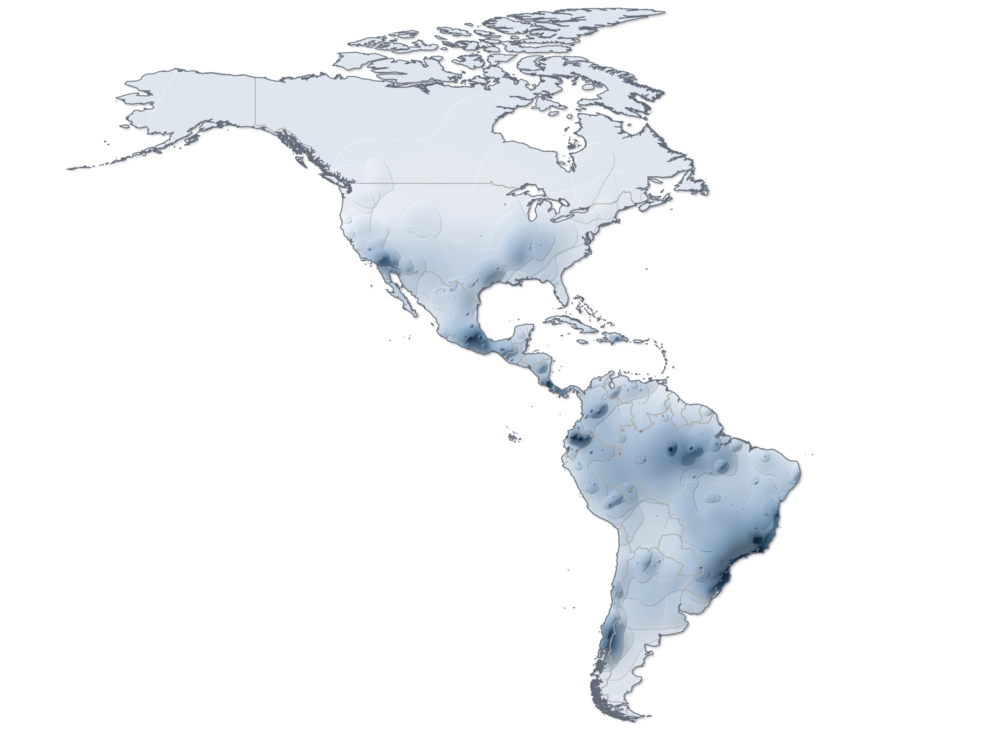
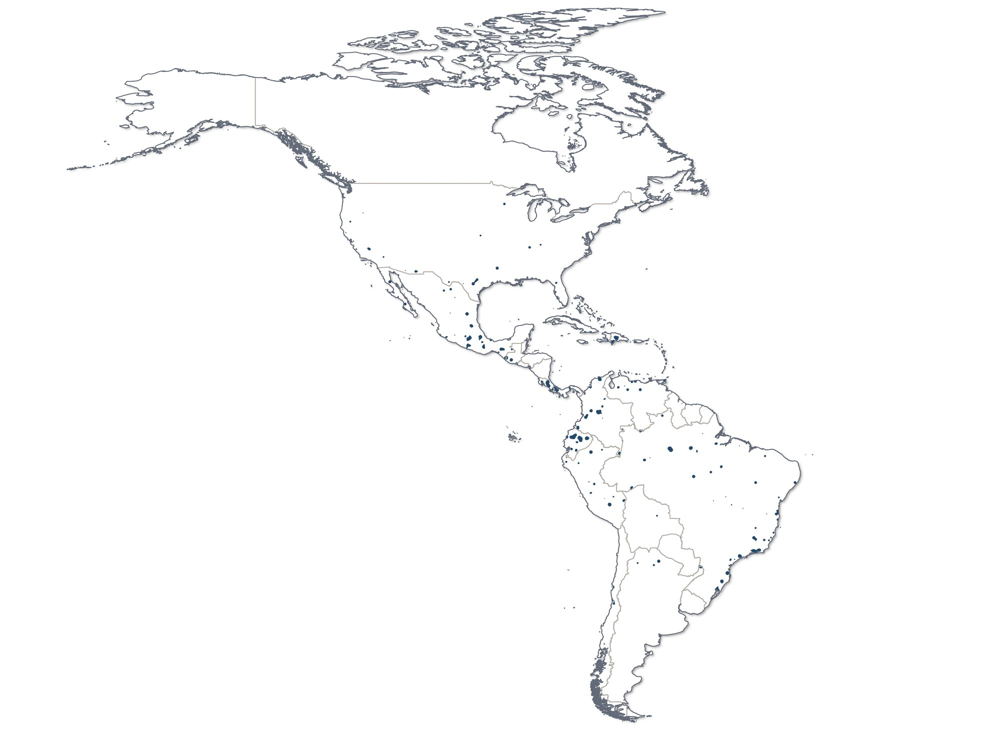
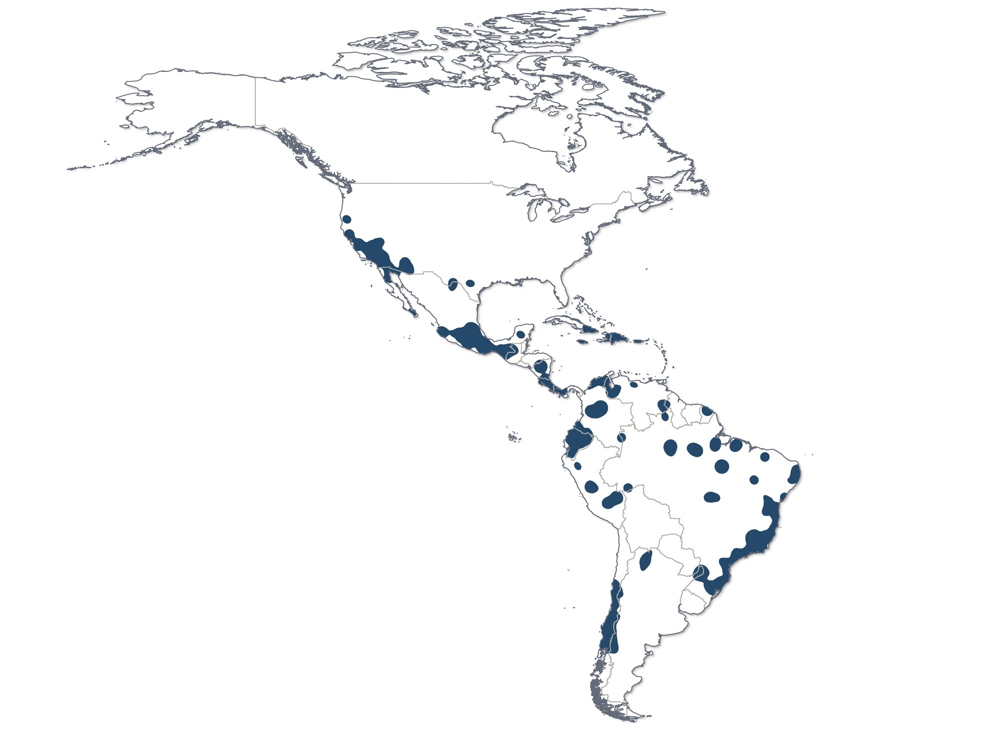
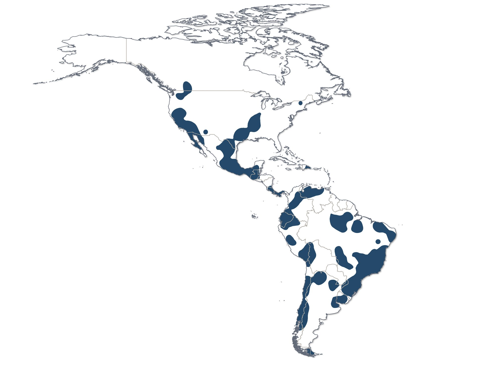
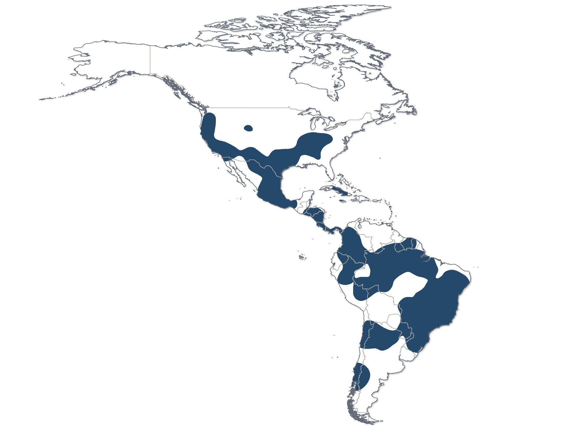

Areas of endemism: 255 regions with species of congruent distribution
Geographic interpolation of endemism (GIE) in nine range-size classes: the consensus and the four most restricted classes.
- Deliverable
- PhD thesis, Graduate Program in Zoology, UFMG (ch. 3)
- Advisor
- Adalberto J. dos Santos
- My role
- Author: database, analyses and maps
- Tools
- QGIS · BioDinamica (Dinamica EGO) · ArcGIS Pro · R





Consensus of the range-size classes: the darker the colour, the more areas of endemism overlap in the same place.
Class 1: species with ranges of up to 50 km. These are the most restricted areas of endemism, small and scattered across the continent.
Class 2: species with ranges of 51 to 200 km.
Class 3: species with ranges of 201 to 400 km.
Class 4: species with ranges of 401 to 600 km. The larger the range, the larger and more continuous the areas.
The consensus and the four most restricted classes side by side: the more restricted the class, the smaller and more numerous the areas.
The problem
Areas of endemism are regions where several species have restricted, overlapping ranges. Delimiting them requires a method that does not depend on arbitrary grids and that works with uneven data.
The data
The records from plate 1. The range of each species is the distance between the centroid of its distribution and its farthest occurrence point.
The method
- Geographic interpolation of endemism (GIE) in BioDinamica, with a kernel density estimator.
- Nine range-size classes: up to 50 km, 51–200, 201–400, 401–600, 601–800, 801–1,000, 1,001–1,500, 1,501–2,000 and over 2,000 km.
- Consensus map of the classes and maps per class.
- Correlation with the bias, richness and endemicity maps, and Moran’s I per class.
The result
There are 255 areas of endemism for spiders in the Americas. The finer the class, the more restricted areas appear.
- Southern and south-eastern Brazil and the Brazilian Amazon concentrate the most areas of endemism.
- The most restricted classes are barely related to record density (r = 0.1 in class 1).
- Spatial clustering grows with range size: Moran’s I of 0.08 in class 1 and 0.95 in class 4.
Publication
- Russo P. (2024). Spider biogeography of the Americas: from literature data to diversity patterns. PhD thesis, Graduate Program in Zoology, UFMG.